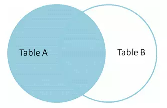

语法构造器¶
SELECT¶
说明： 在（ ItemModel/ListModel ）查询时指定查询的字段使用 ->select($columns) 函数即可。
用法： select( $columns )
参数： $columns: string | array
例1： 底层实现最终都会转化为数组形式。
1 2 3 4 5 6 7 8 9 10 11 12 13 | <?php
ItemModel::make('table_name')
->select('id, name, age')
->execute();
ListModel::make('table_name')
->select([
id,
name,
age
])
->execute();
?>
|
FROM¶
说明： 在所有 Model 类中的 ::make($table) $table 就是数据库表名, 并且默认不写数据库表前缀 t_, 系统内部还会自动为这个表生成一个别名 t , 以便于需要使用这个表时直接使用别名即可。
用法： make( $table )
参数： $table: string
例1：
1 2 3 | <?php
ItemModel::make('user')->execute(); // 数据库表名是: `t_user`
?>
|
WHERE¶
说明： 在 Model 类中只有 InsertModel 没有该条件。
用法： 本章节中基本使用方法/条件控制 有各种形式的封装。
例1：
1 2 3 4 5 6 7 8 9 10 11 12 13 14 15 16 17 18 19 20 21 | <?php
->addColumn('id', '10')
->addColumnsCondition([
'id' => ['in', [1, 2, 3]],
'name' => 'jollysone'
])
->addStrCondition('id = 10')
->addInCondition('id', ['in', [1, 2, 3]])
->addColumnsCondition([
'field1' => 'value1',
'field2' => ['>=', 'value2'],
'field3' => ['<=', 'value3'],
'field4' => ['in', array()]
]);
?>
|
JOIN¶
MySQL官方只提供了三种join方式。
内连接 (inner join)
左连接 (left join)
右连接 (right join)
小技巧
不支持其他的连接关键字。直接写 join 会默认选择内连接方式。
INNER JOIN¶
说明： 数据库使用 join 其实默认就是 inner join 。它也被称为一个等值连接。通过结合基于联接谓词两个表(表1和表2)列值创建一个新的结果表。查询比较表1中的每一行与表2中的每一行，找到所有满足联接谓词的行。 当联接谓词被满足时，对于每个匹配的一对A和B的列值被组合成一个结果行。

用法： join( $type, $table, $as, $on = '', $params = array() )
参数：
$type： enum , 连接方式
inner join|left join|right join'$table： string , 表名,默认不带前缀
$as： string , 此表的别名
$on： string , 连接条件
$params： array , 连接条件中的 PDO 传参
例1： 此函数可以自定义构造任何一种连接方式。
1 2 3 4 5 6 7 8 9 10 11 12 13 14 | <?php
ItemModel::make('user')
->join('inner join', 'logs', 'l', 't.id = l.uid')
->execute();
ItemModel::make('user')
->join('left join', 'logs', 'l', 't.id = l.uid and t.phone = ? and l.time = ?', [
'13011118899',
'2019-08-08 12:34:56'
])
->execute();
?>
|
LEFT JOIN¶
说明： 左连接是得到A表中去除B表内容的剩下的部分，也就是A表独有的一部分。可以看做是在左外连接的结果中将双方共有的部分去掉得到的。
{kind=link}
用法： leftJoin( $table, $as, $on = '', $params = array() )
参数：
$table： string , 表名,默认不带前缀
$as： string , 此表的别名
$on： string , 连接条件
$params： array , 连接条件中的 PDO 传参
例1：
1 2 3 4 5 6 7 8 9 10 11 12 13 14 | <?php
ItemModel::make('user')
->leftJoin('logs', 'l', 't.id = l.uid')
->execute();
ItemModel::make('user')
->leftJoin('logs', 'l', 't.id = l.uid and t.phone = ? and l.time = ?', [
'13011118899',
'2019-08-08 12:34:56'
])
->execute();
?>
|
RIGHT JOIN¶
说明： 同理，右连接是在右外连接的结果中得到B表独有的那一部分。

用法： rightJoin( $table, $as, $on = '', $params = array() )
参数：
$table： string , 表名,默认不带前缀
$as： string , 此表的别名
$on： string , 连接条件
$params： array , 连接条件中的 PDO 传参
例1：
1 2 3 4 5 6 7 8 9 10 11 12 13 14 | <?php
ItemModel::make('user')
->rightJoin('logs', 'l', 't.id = l.uid')
->execute();
ItemModel::make('user')
->rightJoin('logs', 'l', 't.id = l.uid and t.phone = ? and l.time = ?', [
'13011118899',
'2019-08-08 12:34:56'
])
->execute();
?>
|
GROUP BY¶
说明： 按条件分组查询, 可以多次分组(分组后再分组), 一般和聚合函数 count() 、 sum() 、 avg() ... 搭配使用才有意义。
用法： group( $columns )
参数： $columns： string | array
例1： 底层实现最终都会转化为数组形式。
1 2 3 4 5 6 7 8 9 10 11 12 13 14 | <?php
ItemModel::make('user')
->group('id')
->execute();
ItemModel::make('user')
->group('id, name')
->execute();
ItemModel::make('user')
->group(['id', 'name'])
->execute();
?>
|
ORDER BY¶
说明： 按某个条件进行排序, 可以多个条件, 依次从左到右排序。
用法： order( $columns )
参数： $columns： string
例1： ASC 升序, DESC 降序。（不区分大小写）
1 2 3 4 5 6 7 8 9 | <?php
ItemModel::make('user')
->order('id desc')
->execute();
ItemModel::make('user')
->order('id desc, age asc')
->execute();
?>
|
HAVING¶
说明： 一般用于 GROUP BY 分组后的条件查询, 其他情况视条件而用。
用法： having( $condition, $params = [] )
参数： $condition： string , $params: array
例1： 底层实现是字符串拼接或PDO传参形式。
1 2 3 4 5 6 7 8 9 10 11 12 13 14 15 | <?php
ItemModel::make('user')
->group('id')
->having("name = 'jollysone' and age = 24")
->execute();
ItemModel::make('user')
->group('id, name')
->having('name = ? and age = ?',[
'jollysone',
24
])
->execute();
?>
|
LIMIT¶
尚未整理
OFFSET¶
尚未整理
统计总数¶
1 2 3 | <?php
$count = CDbCommand::count($CDbCondition, '*');
?>
|
构造IN条件¶
1 2 3 | <?php
DbUtil::buildInCondition($dbField, $idArray);
?>
|
上级公司¶
只对上级公司有效。
查询逻辑：
com_id in(当前公司及其子公司id)。支持筛选：传
__com_id, 筛选__com_id中的公司。
1 2 3 | <?php
new ManagerComidCondition()
?>
|
用户权限¶
根据当前会话的权限类型，算出uid的取值范围，作为in条件
1 2 3 | <?php
new UserAuthConditon(AuthType::getAuthType(AuthManager::AUTH_HOUSEHOLD_VIEW), 'uid')
?>
|
Equal条件¶
1 2 3 4 5 | <?php
new EqualInCondition($http_field, $db_field)
new EqualCondition($http_field, $db_field)
?>
|
不知道什么的条件¶
1 2 3 4 5 | <?php
// $value是数值，=查询
// $value是数组，in查询
new DefaultValueCondition($db_field, $value)
?>
|
模糊查询¶
默认匹配%$http_field%
$db_field是一个字段，单字段like查询
$db_field是字段数组，多字段or like查询
1 2 3 | <?php
new LikeCondition($http_field, $db_field, $lr)
?>
|
数字范围¶
$db_field >= $http_start_field AND $db_field <= $http_end_field
$data_type 传 int 或 decimal
1 2 3 | <?php
new NumberRangeCondition($http_start_field, $http_end_field, $db_field, $data_type)
?>
|
日期范围¶
$db_field >= strtotime($http_start_field)
AND $db_field <= strtotime($http_end_field) + 86400
1 2 3 | <?php
new DateRangeCondition($http_start_field, $http_end_field, $db_field)
?>
|
切换数据库¶
1 2 3 4 5 6 7 8 9 10 11 12 13 14 15 16 17 18 19 20 21 22 23 24 25 26 | <?php
//访问全局
\CC::app()->db->addConnectListener(new ZhifaServer2ConnectListenerInterface());
//某条查询
$config = [
'dsn' => 'mysql:host=localhost;dbname=fhj',
'username' => 'root',
'password' => '123456'
];
InsertModel::make($table)
->setDbConnectListener(new SimpleConnectListener($config))
->addData($item)
->execute();
插入记录不带com_id
InsertModel::make($table)
->addNoGlobalInsertBeforeInterceptors([
'CC\action\module\common\db\sglobal\ComInsertInterceptors'
])
->addData($item)
->execute();
去掉拦截器默认加上的com_id等于当前公司id的条件
new NoComidCondition()
?>
|
当前项目的数据库连接¶
\CC::app()->db->getConnect();